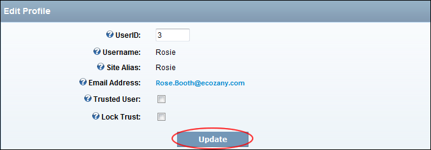

Editing any Forum User's Profile
How to edit any forum user's profile using the Forum module.
Tip 1: Field visibility is managed by the user on their DNN user profile.
Tip 2: Forum users can manage their own profile under My Settings.
- Search and located the required user. See "Searching Forum User Accounts"

- Locate the required user and click the Edit
 button beside their username. This displays the Edit Profile page.
button beside their username. This displays the Edit Profile page.
- Optional. If this is the first time you have visited this user' profile on this page, you can click the Update button and then Refresh (Ctrl + F5) the screen to view the user's Username, Site Alias and Email Address details. Alternatively, they will be viewable whenever you update this page.
- In the User ID text box, modify the user's unique identifier.
- At Username, here you can view the user's DNN username.
Note:
Users can click the link to edit their Account profile for this site.
- At Site Alias, view the alias shown to other users of this module. This will either be the user's Display Name or Username, depending on module settings.
- At Email Address, displays the user's email address. In addition, a checked
 check box displayed if other forum users can view this user's email address in the user profile screen.
check box displayed if other forum users can view this user's email address in the user profile screen.
- At Trusted User, if the user's posts are not moderated - OR - to enable moderation.
- At Lock Trust, if the user's trust status can only be changed by module administrators - OR - if all forum administrators can edit the Trusted User settings.
- Click the Update button.

Viewing/Editing a Forum User's Profile